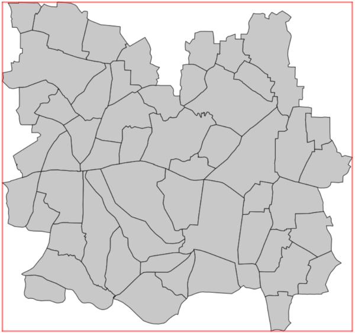
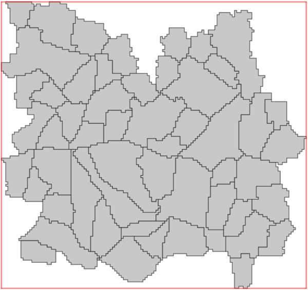
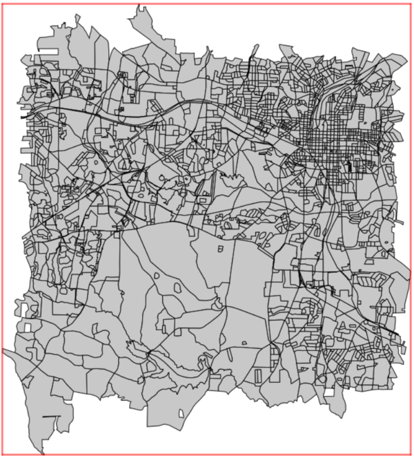
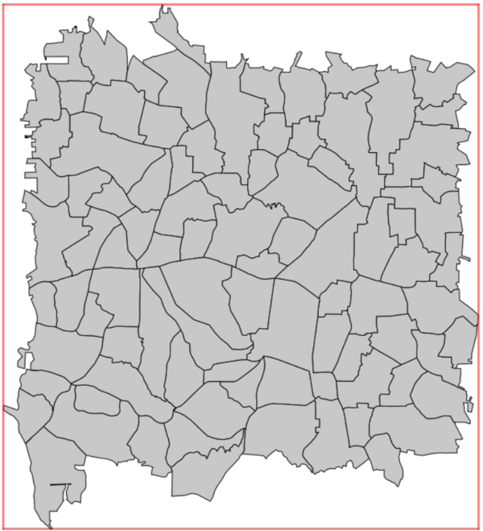
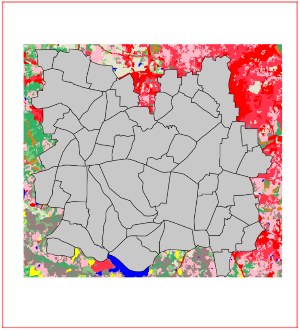
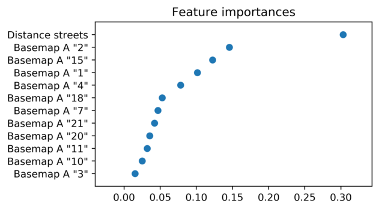
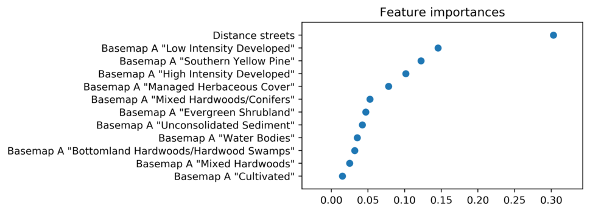

r.area.createweight also creates a 'gridded' version of the spatial units, whose borders will appear as staircases following the spatial resolution of the weighting layer produced. These two outputs can be used in v.area.weigh module.
A Random Forest (RF) regression model is trained at the level of the vector spatial units. The user must specify a vector layer using the vector parameter. The attribute table connected to this layer must contain a column with a unique identifier (numeric), specified via the id parameter. It must also contain a column with the numeric value to be used as the response variable (e.g. population count), specified via the response_variable parameter.
The user must specify at least one categorical raster map, basemap_a. Optionally, other variables can be added to the Random Forest model: A second categorical raster map can be defined with the parameter basemap_b, and/or a raster with continuous values (e.g. distance to the nearest road, school, hospital, university...) with the parameter distance_to. From these raster maps, the Random Forest's explanatory variables (i.e. covariates, predictors) are calculated. For each of the categorical raster maps (basemaps), the proportion of each class is calculated. For the continuous raster map, the average values are calculated.
Once trained, the Random Forest model predicts weights in a raster grid. The spatial resolution of this output weighted grid should be specified via the tile_size parameter, and its name via the output parameter. The tile_size must be greater than the spatial resolution of basemap_a. It it considered good practice that the tile_size also be greater than the spatial resolution of the other basemap and distance maps. The extent of the output weighted grid is created using the extent of the spatial units, i.e. the vector parameter.
By default, all classes from the raster basemap(s) are taken into account. If the user wants only specific classes to be taken into account within the Random Forest model, it is possible to provide an optional list of these classes with the basemap_a_list parameter (for basemap_a) or the basemap_b_list parameter (for basemap_b, if used).
The out-of-bag error (OOB) of the model is printed in the console and gives an indication about the internal accuracy of the model (cross-validation on training set at the spatial units level). The log of the Random Forest run (including the OOB error) is saved in a file which path and name has to be specified via the log_file parameter. Using the -f flag, the log file will include extended information about the cross-validation for each set of parameters tested in the grid search.
Feature importances in the model are plotted in a graph, which path and name has to be specified via the plot parameter. By default, class values are used. Optionally, class labels can be used as plot labels, using the flags -a and -b, for basemap_a and basemap_b respectively. If these flags are used, the raster should already contain the associated category labels. The module r. category can be used to set category labels for a raster map. If the flag(s) -a and/or -b is(are) selected without existing categories for the corresponding raster map, the class value will be kept.
Parallel processing is supported. The number of cores to be used should be specified via the n_jobs parameter.
The addon is described in more details in a paper [3] with a case study.
The module r.mask is used within r.area.createweight. The user should first remove any masks.
It is good practice that the spatial units (vector parameter) are entirely spatially covered by all the input rasters. Any spatial units not sufficiently covered by all the input rasters should first be removed by the user, prior to run r.area.createweight. The add-on, however, will function even if the spatial units are not completely covered by the input rasters. This allows for occasionally missing pixels, or a non-perfect alignment of input rasters with the spatial units (i.e. NULL values in the rasters). In the example below, numerous spatial units are not sufficiently covered, and should be removed prior to running the add-on. It is up to the users to choose an acceptable level of coverage for their analysis, and to ensure the quality of the input data, keeping in mind that the higher the coverage, the better the RF model. The RF model and its' prediction will only be as good as the input data it is given.
Only the spatial units in grey are completely spatially covered by the basemap and are the ideal selection for the analysis.
If a cell of the weighted grid (output parameter) is not covered by all the input rasters (i.e. if the statistics calculated for that cell are null for at least one of the input rasters), the cell will be given a nodata value.
The module makes a temporary copy of the categorical input rasters (basemap_a and basemap_b) clipped to the area covered by the spatial units. This allows for the extraction of raster categories that exist only within the spatial units. If a user specifies a list of raster categories (basemap_a_list or basemap_b_list), these classes must be present in the area covered by the spatial units. The distance map (distance_to) is not changed, and it is kept in its original format.
The spatial units are rasterised to the extent, cell size and alignment of the output weighted grid, and then are re-vectorised. This results in spatial units whose boundaries will have a 'staircase' appearance, and ensures that each tile of the output weighted grid will be contained in only one spatial unit. This 'gridded' version of the spatial units can be used as an input for dasymetric mapping with v.area.weigh. However, if the original vector contains small (or very narrow) polygons, and the desired tile-size is too large, some polygons can disappear during this process. This will produce an error. The user should reduce the tile size, and/or edit the spatial units vector to merge the smallest spatial units with their neighbouring units (see examples).
|  |  |
|---|---|
| Input spatial units | 'Gridded' spatial units |
The response variable is log-transformed to avoid non-normal distribution and used to train the model. The prediction is then back-transformed and stored in the final weight raster. This approach is similar to the one proposed by [1]. Because of this log transformation (napierian logarithm), it is mandatory to not have zero or negative values in the column containing the response variable (response_variable parameter). It is also expected that the response variable column does not contain NULL values. For the same reason, the model is unable to predict a zero weight value. The implementation of the add-on is designed to set a value of 0 in the weighting layer if the predicted weight is smaller than 0.0000000001 obs./m².
The covariates whose feature importance is bellow 0.5% are, by default, removed from the final model. The -a flag can be used to force keeping all the covariates in the final model.
The parameters of the Random Forest model are tuned using grid search and cross-validation. By default, a 5-fold cross-validation scheme is used but the user can change the number of folds using the kfold parameter. Optionally, the user can provide a Python dictionary with the parameters to be tested via the param_grid parameter. For information about the parameters to be used, please refer to the scikit-learn manual. An example of the format is as follows, these are the parameters tested in the add-on:
"{'oob_score':[True],'bootstrap':[True],\
'max_features':['sqrt',0.1,0.3,0.5,0.7,1],\
'n_estimators':[500,1000]}"
r.area.createweight uses the "scikit-learn" machine
learning package (version >= 0.24.1) along with the "pandas"
Python package (version >= 1.0.1). These packages need to be installed
within your GRASS GIS Python environment for
r.area.createweight
to work, i.e. using the GRASS command line terminal for installation.
For Linux users, this package should be available through the
Linux package manager in most distributions (named for example
"python3-scikit-learn").
For MS-Windows users using a 64 bit GRASS, the easiest way is to use the
OSGeo4W
installation method of GRASS, where the Python setuptools can also be
installed. The users can then run 'easy_install pip' to install the pip
package manager. Then, they can download the "Python wheels"
corresponding to each package and install them using the following
command: pip install packagename.whl. Links for
downloading wheels are provided below. The version installed should be
compatible with user's Python version. If GRASS was not installed
using the OSGeo4W method, the pip package manager can be installed by
saving the "get-pip.py" python script provided
here in the folder
containing the GRASS GIS Python environment
(GRASSFOLDER/../etc/python/grass) and executing it with administrator
rights with the following command: python get-pip.py
Set region
g.region raster=landuse96_28m
Rasterize streets
v.to.rast input=streets_wake type=line output=streets_wake_rast \ use=attr attribute_column=F_NODE
Create distance to streets map
r.grow.distance input=streets_wake_rast \ distance=distance_streets
Remove unnecessary files
g.remove -f type=raster name=streets_wake_rast
Set region
g.region vector=censusblk_swwake
Create a vector of points with the centroids of all polygons in the initial census file
v.to.points input=censusblk_swwake type=centroid,face \ output=censusblk_swwake_points
Merge polygons to create larger spatial zones
v.clean input=censusblk_swwake output=censusblk_swwake_merge \ tool=rmarea threshold=1060000
Drop attribute table and connection to layer for merged vector
db.droptable -f table=censusblk_swwake_merge v.db.connect -d map=censusblk_swwake_merge
Add new attribute table to merged vector
v.db.addtable map=censusblk_swwake_merge \ columns="id integer"
Populate attribute table with id and population data (using v.vect.stats to sum up population values)
v.what.vect map=censusblk_swwake_merge column=id \ query_map=censusblk_swwake_points \ query_column=OBJECTID v.vect.stats points=censusblk_swwake_points \ areas=censusblk_swwake_merge method=sum points_column=TOTAL_POP \ count_column=count stats_column=pop
v.extract -r input=censusblk_swwake_merge \ cats='32,552,494,479,483,604,515,553,724,621,700,956,1500,1819,1597, \ 2190,2239,2263,2360,2483,2514,2507,2433,2503,2466,2513,471,472,469, \ 461,448,388,253,204,145,43,33' output=censusblk_swwake_final
Remove unnecessary files
g.remove -f type=vector \ name=censusblk_swwake_points,censusblk_swwake_merge
|  |  |  |
|---|---|---|
| Initial census layer | Census layer after merging | Census layer after removal of non-covered spatial units |
r.area.createweight vector=censusblk_swwake_final id=cat \ response_variable=pop basemap_a=landuse96_28m tile_size=100 \ output_weight=weighted_layer output_units=gridded_spatial_units \ plot=path/to/filename log_file=path/to/filename n_jobs=4
Generate a weighting layer using only certain classes of the land use map
r.area.createweight vector=censusblk_swwake_final id=cat \ response_variable=pop basemap_a=landuse96_28m tile_size=100 \ output_weight=weighted_layer output_units=gridded_spatial_units \ plot=path/to/filename log_file=path/to/filename \ basemap_a_list=1,2,4 n_jobs=4
Generate a weighting layer using land use map, distance map and associated class names for feature importance plot
r.area.createweight -a vector=censusblk_swwake_final id=cat \ response_variable=pop basemap_a=landuse96_28m \ distance_to=distance_streets tile_size=100 \ output_weight=weighted_layer output_units=gridded_spatial_units \ plot=path/to/filename log_file=path/to/filename n_jobs=4
|  |  |
|---|---|
| Feature importances without names | Feature importances with names |
[2] Grippa, T., Linard, C., Lennert, M., Georganos, S., Mboga, N., Vanhuysse, S., Gadiaga, A., Wolff, E., 2019. Improving urban population distribution models with very-high resolution satellite information. Data, 4(1), 13. https://doi.org/10.3390/ data4010013
[3] Flasse, C., T. Grippa, et S. Fennia. 2021. A TOOL FOR MACHINE LEARNING BASED DASYMETRIC MAPPING APPROACHES IN GRASS GIS. The International Archives of the Photogrammetry, Remote Sensing and Spatial Information Sciences XLVI-4/W2-2021: 55‑62. https://doi.org/10.5194/isprs-archives-XLVI-4-W2-2021-55-2021
{kind=link}
{kind=link}
{kind=link}
{kind=link}
{kind=link}
{kind=link}
{kind=link}
{kind=link}
{kind=link}
{kind=link}